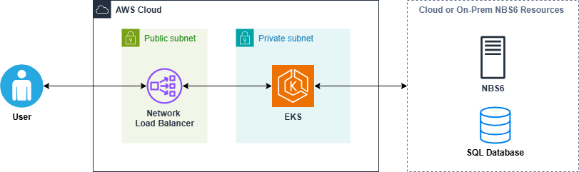

Quick start (AWS)
This page provides a streamlined path to deploy infrastructure and core microservices in . It is intended for experienced administrators familiar with AWS, and relies on tools such as , and .
On this page
- Scope and limitations
- Prerequisites
- Set up AWS infrastructure (Terraform)
- Deploy core Kubernetes services (Helm)
- Install Keycloak
- Deploy NBS 7 microservices (Helm)
- Validate installation
- Cleanup
- Support
Scope and limitations
This guide is not intended for production deployment. For full production steps and guidance, see Deploy NBS 7.
This quick start installs and configures the following resources.
Terraform-managed resources
- Modern , , and route tables
- cluster and nodes
- (NLB)
Manual configuration
- Route53 updates: create entries in Route53 to point app and data URLs to the Network Load Balancer.
NBS 7 core services
- : Search indexing and query support.
- Modernization API: Modern NBS capabilities, including patient and event search.
- : Elasticsearch index population from the NBS database.
- NBS Gateway: Routing between modern and legacy NBS.
- Data ingestion: ingestion from labs and other sources.
- : Primary identity provider (IdP), token management, and SSO integration.
Prerequisites
Install these tools
Environment requirements
- AWS Account with NBS 6.0.16 access (or newer)
- DNS routing infrastructure: domain information for modernized NBS application URLs (for example,
app.site_name.domain.com) - roles for Terraform and Kubernetes
- Access to NBS 6 (SQL Server) databases to run scripts
- S3 bucket for Terraform state
Set up AWS infrastructure (Terraform)

Prepare the directory
mkdir -p ~/nbs-setup/terraform/aws/nbs7-mySTLT-test
cd ~/nbs-setup/terraform/aws/nbs7-mySTLT-test
Download Terraform configuration
Clone the infrastructure repo:
git clone https://github.com/CDCgov/NEDSS-Infrastructure.git
Copy standard template:
cp -pr terraform/aws/samples/NBS7_standard terraform/aws/nbs7-mySTLT-test
Customize variables
- Update the
terraform.tfvarsandterraform.tfwith your environment-specific values by following the NEDSS infrastructure sample configuration instructions.
Review inbound rules on the security groups attached to your database instance. Ensure the you intend to use with your NBS 7 VPC (
modern-cidr) is allowed to access the database.
Initialize and apply Terraform
terraform init
terraform plan
terraform apply
Validate infrastructure
- Confirm VPC, Amazon EKS cluster, subnets, and are created.
- Verify Amazon EKS cluster authentication and running pods and nodes:
aws eks --region us-east-1 update-kubeconfig --name <clustername> e.g. cdc-nbs-sandbox
kubectl get pods --namespace=cert-manager
kubectl get nodes
Deploy core Kubernetes services (Helm)
Install NGINX Ingress
helm repo add ingress-nginx https://kubernetes.github.io/ingress-nginx
helm install ingress-nginx ingress-nginx/ingress-nginx
kubectl --namespace ingress-nginx get services -o wide -w ingress-nginx-controller
kubectl get pods -n=ingress-nginx
Create DNS entries in Route53
- Point the modernized NBS application URL to the new Network Load Balancer in front of your Kubernetes cluster.
app.<site_name>.<domain>.com
- Point the data services URL to the new Network Load Balancer in front of your Kubernetes cluster.
data.<site_name>.<domain>.com
Install Cert Manager (optional)
helm repo add jetstack https://charts.jetstack.io
helm install cert-manager jetstack/cert-manager --namespace cert-manager --create-namespace --set installCRDs=true
Install and verify (optional)
kubectl annotate namespace default "linkerd.io/inject=enabled"
kubectl get namespace default -o=jsonpath='{.metadata.annotations}'
Install Cluster Autoscaler (optional)
helm repo add autoscaler https://kubernetes.github.io/autoscaler
helm install cluster-autoscaler autoscaler/cluster-autoscaler -n kube-system
Verify services are running
kubectl get pods -A
Install Keycloak
Create the Keycloak database. Make sure to update the database password.
use master
IF NOT EXISTS(SELECT * FROM sys.databases WHERE name = 'keycloak')
BEGIN
CREATE DATABASE keycloak
END
GO
USE keycloak
GO
BEGIN
CREATE LOGIN NBS_keycloak WITH PASSWORD = 'EXAMPLE_KCDB_PASS8675309';
CREATE USER NBS_keycloak FOR LOGIN NBS_keycloak;
EXEC sp_addrolemember N'db_owner', N'NBS_keycloak'
END
Install Keycloak container
Edit the following parameters in <helm extract directory>/charts/keycloak/values.yml:
kcDbPasswordkcDbUrlkeycloakAdminPasswordefsFileSystemId
helm install keycloak --namespace default --create-namespace -f keycloak/values.yaml
Port forward to access Keycloak admin interface
kubectl --namespace default port-forward "$POD_NAME" 8080;
http://127.0.0.1:8080/auth
Configure realms, users, and clients
- Log in as the Keycloak admin user.
- Upload
<helm extract directory>/charts/keycloak/extra/01-NBS-realm-with-DI-client.json. - Upload
<helm extract directory>/charts/keycloak/extra/05-nbs-users-nnd-client.json. - Upload
<helm extract directory>/charts/keycloak/extra/02-nbs-users-realm.json. - Run partial import from the
nbs-usersrealm for<helm extract directory>/charts/keycloak/extra/03-nbs-users-base-users.json. - Run partial import from the
nbs-usersrealm for<helm extract directory>/charts/keycloak/extra/04-nbs-users-development-clients.json.
Deploy NBS 7 microservices (Helm)
Deploy the Helm charts in the following order.
elasticsearch-efsmodernization-apinifi-efsnbs-gatewaydataingestion-service
Run the following commands from the
<helm extract directory>/chartsdirectory.
Deploy Elasticsearch
Update the required parameters in values.yaml by following the Elasticsearch EFS chart values table
helm install elasticsearch -f ./elasticsearch-efs/values.yaml elasticsearch-efs
Deploy Modernization API
Update the required parameters in values.yaml by following the Modernization API chart values table
helm install modernization-api -f ./modernization-api/values.yaml modernization-api
Deploy NiFi
Update the required parameters in values.yaml by following the NiFi EFS chart values table
helm install nifi -f ./nifi-efs/values.yaml nifi-efs
Deploy NBS Gateway
Update the required parameters in values.yaml by following the NBS Gateway chart values table
helm install nbs-gateway -f ./nbs-gateway/values.yaml nbs-gateway
Deploy Data ingestion service
Create the Data Ingest database and set user permissions before deploying data ingestion:
IF NOT EXISTS(SELECT * FROM sys.databases WHERE name = 'NBS_DataIngest')
BEGIN
CREATE DATABASE NBS_DataIngest
END
GO
USE NBS_DataIngest
GO
use [NBS_ODSE];
GO
USE [NBS_DataIngest]
GO
CREATE USER [nbs_ods] FOR LOGIN [nbs_ods]
GO
USE [NBS_DataIngest]
GO
ALTER USER [nbs_ods] WITH DEFAULT_SCHEMA=[dbo]
GO
USE [NBS_DataIngest]
GO
ALTER ROLE [db_owner] ADD MEMBER [nbs_ods]
GO
Update the required parameters in values.yaml by following the Data Ingestion Service chart values table
helm install dataingestion-service -f ./dataingestion-service/values.yaml dataingestion-service
Verify services
- Confirm all pods are running before moving on.
kubectl get pods -A
Validate installation
Manual tests
- Log in to the NBS UI (for example, https://app.example.com/nbs/login).
- Confirm basic patient search functionality.
Automated tests
- Use
nbs-test-api.shandnbs-test-webui.shfor basic API and UI smoke tests.
Cleanup
Follow these steps to clean up the environment.
These cleanup steps remove ingress resources and can immediately interrupt access to NBS 7 endpoints in this environment.
- Remove DNS entries:
app.<site_name>.<domain>.comdata.<site_name>.<domain>.com
Running
terraform destroypermanently deletes infrastructure managed by this Terraform workspace.
# Remove nlb and ingress routing
helm list --namespace ingress-nginx
helm uninstall --namespace ingress-nginx ingress-nginx
# Empty fluentbit s3 bucket manually
terraform destroy
Support
- For support, contact NBSSupport@cdc.gov.
- For ongoing updates, check the GitHub repo for new releases.